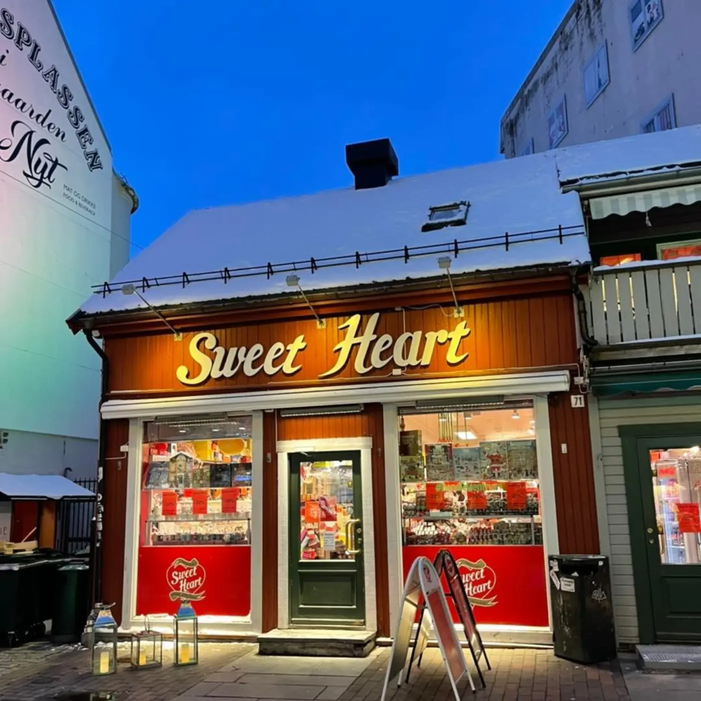

En verden av godteri
I hjertet av Tromsø — siden 1984
Sweet Heart har vært en skattekiste av søtsaker og smaksopplevelser i Storgata siden dørene først åpnet i oktober 1984.
Man–ons09.00–18.00
Tor09.00–19.00
Fre09.00–18.00
Lør10.00–17.00
Søn12.00–18.00
Telefon+47 95 40 66 05
Konfekteskeopnar seg
Sweet Heart
Handaplukka sidan 1984Rull for å opne
Utvalg
Fra disken
Konfekt, smågodt, is og sesongens søtsaker — plukket for hånd i butikken i Storgata.



Om oss
Fire tiår med søtsaker
Sweet Heart åpnet i oktober 1984 og har siden vært en del av Tromsø sentrum — et sted å stikke innom for noe godt, en gave eller en pose smågodt til helga.
- Handaplukka konfekt fra disken
- Smågodt til store og små
- Åpent alle dager, også søndag
«Sweet Heart har vært en skattekiste av søtsaker og smaksopplevelser i hjertet av Tromsø sentrum.»
Skal du bestille noe til en anledning?
Konfektesker, kaker og gaver — ta kontakt, så setter vi det sammen.